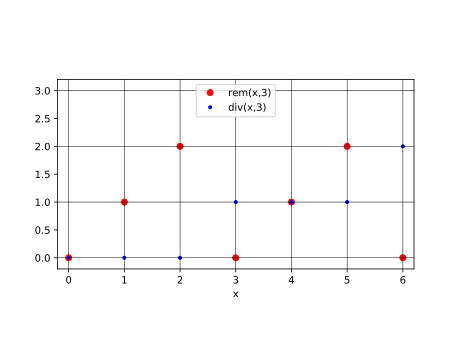
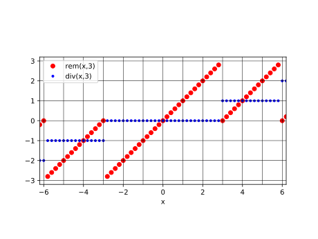
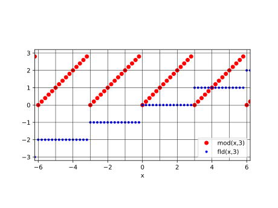
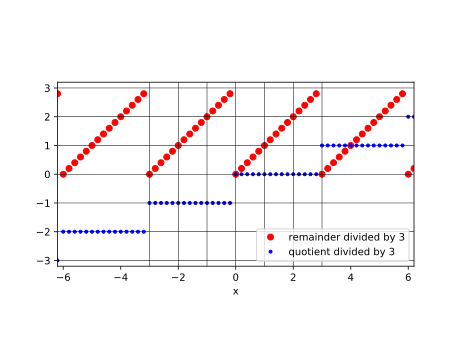
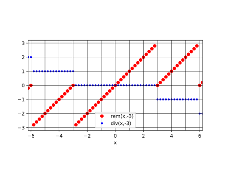
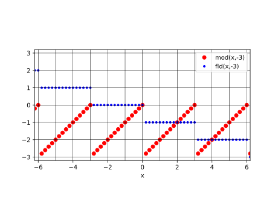

第6回：■ 型・■ 整数型
■ 型
データの種類のこと
julia> typeof(1)
Int64
julia> typeof(1.0)
Float64Primitive types 基本型
Composite Types 複合型, 構成型
■ 整数
既定の整数型は、Int64 と呼ばれ、 64桁 (64bit, binary digit)の2進数である。
負の数 $-n$ を $2^{64}-n$ で表す「2の補数」方式を用いて、 正負の数を表す「符号付整数」である。
Int64で表される最大の数は $2^{63}-1$ である。 また、最小の数（絶対値が最大な負の数)は $-2^{63}$ である。 これらの値は、それぞれ typemax(Int64),typemin(Int64) という関数で求められる。
julia> 2^63-1
9223372036854775807
julia> typemax(Int64)
9223372036854775807
julia> typemin(Int64)
-9223372036854775808!!! Note 2の補数を求める方法が知られていれば、 減算は、引く数の「2の補数」を求め、加算すればよい。 幸い、2の補数は簡単に求められる。
2の補数では、2進数の最上位の桁が、符号に相当する。
すなわち、負の数では、
最上位の桁 (Most-Significant Bit, MSB)は `1`、
正の数または0では、MSBは `0` である。■ 整数同士の加減乗算
整数同士の加減算は、2の補数として行われる。 typemin(Int64)から typemin(Int64) までの範囲を超えても、 例外は発生しない。
julia> typemax(Int64)+1
-9223372036854775808
julia> typemax(Int64)+2
-9223372036854775807
julia> typemin(Int64)-1
9223372036854775807
julia> typemin(Int64)-2
9223372036854775806
julia> typemax(Int64)+typemax(Int64)
-2
julia> typemax(Int64)*2
-2
julia> typemax(Int64)*4
-4■ 整数同士の除算
除算の結果は、小数(浮動小数点数)になる。
julia> 1 / 2
0.5■ 整数と浮動小数点数との四則演算
整数と小数を四則演算すると、小数になる。
julia> 1 + 2
3
julia> 1 + 2.0
3.0
julia> 1 * 2
2
julia> 1 * 2.0
2.0■ 浮動小数点数から整数への変換
浮動小数点数を整数に変換するには、Int64(x)を用いる。 ただし、$x$が小数部を含むと例外がでる（エラーとなる）ので、 小数部を $0$に変換する必要がある。
この際、床関数が用いられる。
julia> Int64(1.0)
1
julia> Int64(1.1) # エラー
ERROR: InexactError()
julia> Int64(floor(1.1))
1■ 剰余
被除数$x$を除数$d$で除した商が$q$、余り（剰余)が$r$であるとき $x=qd+r$ が成り立つ。 被除数$x$と除数$d$の両方が正の数の場合、 剰余$r$ は$0 \le r \lt d$の範囲である。
被除数$x$と除数$d$の両方が正の整数のとき、 剰余$r$を求めるのに関数 $rem$ が、 商$q$を求めるのに関数 $div$ が、それぞれよく用いられる。
rem関数 Base.rem
using PyPlot
xs=0:7
d=3
plot(xs,rem.(xs,d), "ro", label="rem(x,"*string(d)*")")
plot(xs,div.(xs,d), "b.", label="div(x,"*string(d)*")")
xlim(-0.2,6.2)
ylim(-0.2,3.2)
xlabel("x")
legend()
for x=0:7
axvline(x, color="k", lw=0.5)
end
for y=0:3
axhline(y, color="k", lw=0.5)
end
plt[:axes]()[:set_aspect]("equal")
▶︎ ユークリッドの互除法
2 つの自然数 $a$, $b$ ($a \ge b$) について、 $a$ の $b$ による剰余を $r$ とすると、 $a$ と $b$ との最大公約数は $b$ と $r$ との最大公約数に等しいという性質が成り立つ。 この性質を利用して、$b$ を $r$ で割った剰余、 除数 $r$ をその剰余で割った剰余、 と剰余を求める計算を逐次繰り返すと、 剰余が $0$ になった時の除数が $a$ と $b$ との最大公約数となる。
julia> a=1071
1071
julia> b=1029
1029
julia> @show a,b
(a, b) = (1071, 1029)
(1071, 1029)
julia> while b != 0
t = a
b = rem(a, b)
a = t
@show a,b
end
(a, b) = (1071, 42)
(a, b) = (1071, 21)
(a, b) = (1071, 0)
julia> @show a,b
(a, b) = (1071, 0)
(1071, 0)3355と2379の最大公約数を求めてみよう。
julia> a=3355
3355
julia> b=2379
2379
julia> @show a,b
(a, b) = (3355, 2379)
(3355, 2379)
julia> while b != 0
t = a
b = rem(a, b)
a = t
@show a,b
end
(a, b) = (3355, 976)
(a, b) = (3355, 427)
(a, b) = (3355, 366)
(a, b) = (3355, 61)
(a, b) = (3355, 0)
julia> @show a,b
(a, b) = (3355, 0)
(3355, 0)■ 商と剰余
整数$x$を$d$で割ったときの商と剰余の関係 $x=qd+r$ は、 負の数や、小数に拡張できる。 被除数$x$や除数$d$が負の数の場合、 商 $q$と 剰余 $r$ の取るべき値について、 いくつかの考え方がある。
rem関数の剰余は、被除数 x と同じ符号を選ぶ。
using PyPlot
xs=-6.8:0.2:6.8
d=3
plot(xs,rem.(xs,d), "ro", label="rem(x,"*string(d)*")")
plot(xs,div.(xs,d), "b.", label="div(x,"*string(d)*")")
xlim(-6.2,6.2)
ylim(-3.2,3.2)
xlabel("x")
legend()
plt[:axes]()[:set_aspect]("equal")
for x=-7:7
axvline(x, color="k", lw=0.5)
end
for y=-3:3
axhline(y, color="k", lw=0.5)
end
除数$d$が正の場合、 mod関数は、$0 \leq r \lt d$ の範囲の剰余 $r$ を返す。
これに対応する商は fld関数で求められる。
using PyPlot
xs=-6.8:0.2:6.8
d=3
plot(xs,mod.(xs,d), "ro", label="mod(x,"*string(d)*")")
plot(xs,fld.(xs,d), "b.", label="fld(x,"*string(d)*")")
xlim(-6.2,6.2)
ylim(-3.2,3.2)
xlabel("x")
legend()
plt[:axes]()[:set_aspect]("equal")
for x=-7:7
axvline(x, color="k", lw=0.5)
end
for y=-3:3
axhline(y, color="k", lw=0.5)
end
fld(x,d) は、$\dfrac{x}{d}$ 以下の最大の整数である。 つまり、floor(x/d) と同じである。
using PyPlot
xs=-6.8:0.2:6.8
d=3
qs=floor.(xs/d)
rs=xs-qs*d
plot(xs, rs, "ro", label="remainder divided by "*string(d))
plot(xs, qs, "b.", label="quotient divided by "*string(d))
xlim(-6.2,6.2)
ylim(-3.2,3.2)
xlabel("x")
legend()
plt[:axes]()[:set_aspect]("equal")
for y=-3:3
axvline(y, color="k", lw=0.5)
end
for x=-7:7
axhline(x, color="k", lw=0.5)
end
◀︎ 練習
日本では、小額の取引に、
500円
100円
50円
10円
5円
1円
の6種類の硬貨がよく用いられる。
金額が与えられたときに、6種類の硬貨が各々何枚必要か計算せよ。 ただし、高額の硬貨を優先して用いるものとする。
第一段階として、100円、10円、1円に分けるプログラムを書いて実行せよ。
第二段階として、上の 6種類の硬貨に分けるプログラムを書いて実行せよ。同様な処理は、繰り返し (for文)を用いてみよ。
第三段階として、1円刻みで551円までの金額に対して、6種類の硬貨の枚数を描くプログラムを書いて実行せよ。
◀︎ 練習
10の位で
100の位で
1000の位で
0.1の位で
一般に$10^{n}$の位で
数を切り捨てるには、どうすればよいか？
プログラムを書いて、実行してみよ。
◀︎ 練習
10の位で
100の位で
1000の位で
0.1の位で
一般に$10^{n}$の位で
数を四捨五入するには、どうしたらよいか？
プログラムを書いて、実行してみよ。
負の除算に対する剰余
除数 $d$が負の場合も、 rem関数は、$0 \leq r \lt d$ の範囲の剰余 $r$を返す。 Base.rem
using PyPlot
xs=-6.8:0.2:6.8
d=-3
plot(xs,rem.(xs,d), "ro", label="rem(x,"*string(d)*")")
plot(xs,div.(xs,d), "b.", label="div(x,"*string(d)*")")
xlim(-6.2,6.2)
ylim(-3.2,3.2)
xlabel("x")
legend()
plt[:axes]()[:set_aspect]("equal")
for x=-7:7
axvline(x, color="k", lw=0.5)
end
for y=-3:3
axhline(y, color="k", lw=0.5)
end
除数 $d$が負の場合は、 mod関数は、$d \lt r \le 0$ の範囲の剰余 $r$を返す。
using PyPlot
xs=-6.8:0.2:6.8
d=-3
plot(xs,mod.(xs,d), "ro", label="mod(x,"*string(d)*")")
plot(xs,fld.(xs,d), "b.", label="fld(x,"*string(d)*")")
xlim(-6.2,6.2)
ylim(-3.2,3.2)
xlabel("x")
plt[:axes]()[:set_aspect]("equal")
for x=-7:7
axvline(x, color="k", lw=0.5)
end
for y=-3:3
axhline(y, color="k", lw=0.5)
end
■ 除数が 0 の場合
除数が 0 で割ると例外を発生する
除算例外